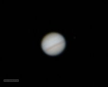

{kind=link}
Jupiter and its moons
2005-04-06. Jupiter and the four Galilean Moons using Meade LX200 12" telescope. No eyepiece projection.
{kind=link}
Jupiter and Galilean moons
2006-04-18. Jupiter and the four Galilean Moons on Meade LX200 12" without eyepiece projection.

Jupiter with moons
2010-09-12. Jupiter and the four Galilean moons on Meade LX200 12" telescope without eyepiece projection.

{kind=link}
Jupiter w/o south equatorial belt.
Note that the southern equatorial belt has disappeared. Taken using the Digital Rebel XT on the Meade LX200 12" telescope without eyepiece projection.
{kind=link}
{kind=link}
{kind=link}
Jupiter and 2 moons
Jupiter with a Logitech webcam on Meade LX200. Moons are Io (close to Jupiter) and Ganymede (right).
Jupiter and 2 moons
Jupiter with 2 Galilean Moons. Taken with Logitech webcam on Meade LX200. (Wavelet sharpening was done too hastily here.
Jupiter with Io's shadow on 5/23/18.
Jupiter. Note the Great Red Spot is not facing us, but the shadow of the moon Io is visible in the northern hemisphere. Taken with Canon T5i on Celestron 11"…
{kind=link}
Jupiter and 3 moons. 5/25/18.
Jupiter with 3 labeled Galilean moons on 5/25/18. Taken using Canon T5i on Celestron 11" with eyepiece projection.
{kind=link}
Jupiter with red spot
Jupiter with red spot, 5/25/18. Stacked and sharpened image from a Canon T5i video.
{kind=link}
Jupiter and 3 moons on 5/25/18.
Jupiter and 3 Galilean moons (left to right, Ganymede, Io, and Europa). Taken with Canon T5i using Celestron 11" with eyepiece projection. Stacked and sharpened…
Jupiter up close. 5/25/18.
A zoomed view of Jupiter. Taken using Canon T5i on Celestron 11" with eyepiece projection (stacked image from video). Flipped to correct the orientation (N.…
{kind=link}
Jupiter 8/17/20
Jupiter and Io 8/17/20. Taken with Logitech webcam on Celestron 11" without eyepiece projection.
{kind=link}
Jupiter view for 8/22/20.
Jupiter view for 8/22/20. Generated by the Jupiter Viewer Tool provided by the PDS Ring-Moon Systems Node.
Jupiter and 2 moons on 8/22/20.
Jupiter, Io, and Ganymede. (See computer generated image.) Taken with Logitech webcam on Celestron 11" without eyepiece projection.
Jupiter (No GRS) on 9/21/20.
Jupiter on 9/21/20. Note the Great Red Spot is not visible. Taken with Canon T5i on Celestron 11" without eyepiece projection. Stacked image from video.
{kind=link}
{kind=link}